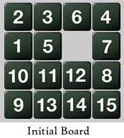
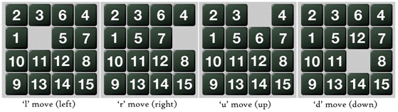
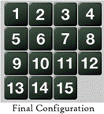

|
A |
Dazzling Puzzle |
|
|
Input |
Standard Input |
|
|
Output |
Standard Output |
|
All of you know the famous 15 puzzle problem. For those, who are not familiar with 15-puzzle, don’t worry, I am adding some description here.
In a 15-puzzle, a 4 x 4 grid is given, where we have 15 cells numbered from 1 to 15 and the remaining cell is empty. Initially the board is scattered. Each time you can move one cell to the empty cell if the cell is vertically or horizontally adjacent to the empty cell. For example, see the board at the left. So, we can bring 6, 5, 7 or 12 in the empty cell in the first move. For this problem, we will consider the moves based on the empty cell, and the moves are ‘l’, ‘r’, ‘u’ or ‘d’, which mean the empty cell is taken to left, right, up or down respectively. So, for the board shown here, we have 4 possible moves. They are given below.

In a 15-puzzle game, you are given a board configuration. You have to use these moves to make the following board configuration.

But for this problem, the board you are dealing with is not necessarily 4 x 4. You will be given an N x N board. In the board, there will be integers from 0 to (N * N – 1), each exactly once. Here 0 denotes the empty cell. You have to use the moves like the 15-puzzle to make the board such that if you traverse the board in row major order, then you will find the positive integers in increasing order and the last cell, which means the cell in last row and last column, is the empty cell. Remember that there can be multiple solutions; you can output any one of them.
Input starts with an integer T (≤100), denoting the number of test cases.
Each test case starts with an integer N (3 ≤ N ≤ 50) denoting the dimension of the board. The next N lines will contain N integers each, which will be separated by one or more spaces. You can assume that the board configuration is correct. That means that the board will contain all the integers from 0 to (N * N - 1).
For each case print the case number first. If the board is already solved then print ‘solved’. If the given board is not solvable then print ‘impossible’. Otherwise print the moves. See the samples for more details. You are not allowed to use more than 8 * N3 moves.
|
Sample
Input |
Sample
Output |
|
3 4 2 3 6 4 1 5 0 7 10 11 12 8 9 13 14 15 3 1 2 3 4 5 6 8 7 0 3 1 2 3 4 5 6 7 8 0 |
Case 1: ulldrrrdllldrrr Case 2: impossible Case 3: solved |
This is a special judge problem, so, wrong output format may also cause wrong answer.